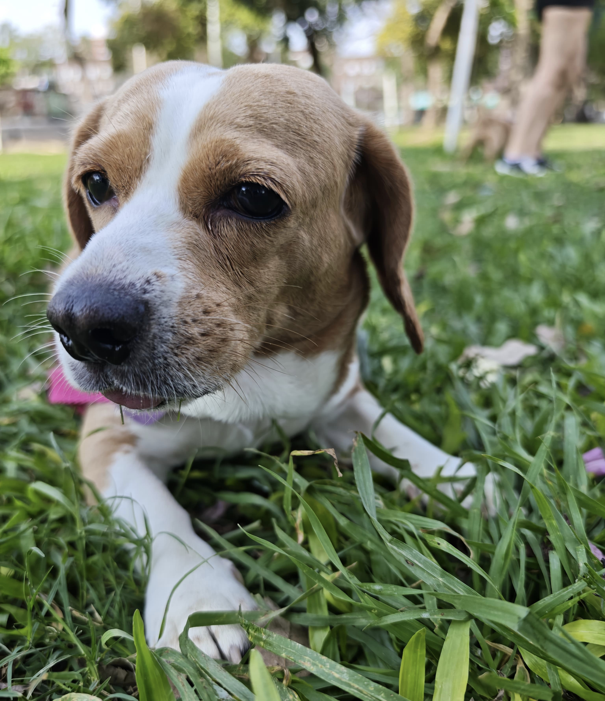

Mimi fue encontrada un día de lluvia, muy flaca y enferma.
Durante los primeros días estuvo en aislamiento para no contagiar a los demás perritos de la casa.
Fue un tiempo difícil para ella, lloraba mucho. Hoy, tres años después, vive feliz y tranquila con su nueva familia.
Brisa apareció en una plaza, buscando comida entre los restos. Estaba sucia y con muchas pulgas.
Gracias a su rescate recibió atención médica y un lugar seguro donde recuperarse. Ahora es una perrita juguetona que llena de alegría a su familia adoptiva.
Dulcevivía encadenada en un patio, sin cariño ni cuidados.
Sus ojos reflejaban tristeza. Tras ser rescatada, descubrió lo que es recibir amor y cuidados.
Hoy corre libremente, llena de energía, y es el corazón de su nuevo hogar.